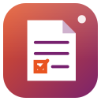

Notes for Ubuntu
Notes, checklists and ideas in Markdown

About
HRHsofts Notes keeps your notes, lists and ideas, saved as you type.
- Markdown with highlighting and quick formatting buttons; lists continue as you press Enter
- Checklists you tick with a click, with progress shown in the list
- Notebooks, #tags, pinned notes and colours; full-text search
- Password-locked notes, encrypted with AES-256-GCM
- Pictures pasted straight into a note
- Reminders that HRHsofts Clocks rings at the right time
- Export as Markdown, a web page or PDF; trash keeps deleted notes for 30 days
- Keep notes in a synced folder (such as HRHsofts Cloud); conflicting edits keep both versions
Install
From the terminal (adds the signed HRHsuite repository so Notes keeps itself updated):
wget -qO- https://hrhsofts-repos.github.io/apt/install.sh | sudo sh -s -- notesIf the repository is already set up, or on HRHsofts Ubuntu:
sudo apt install hrhsofts-notesOr download the .deb and install it with App Center or sudo apt install ./hrhsofts-notes_1.0.0-1_all.deb.
- Package
hrhsofts-notes- Version
- 1.0.0
- Released
- 2026-11-12
- Size
- 92.4 KB
- SHA-256
9aac3ee2498cf89ae6ff3245317ecc2b54c961c769aba733b4f94f9a9a6f7b34- License
- GNU GPL 3.0 or later (free software)
- Requires
- Ubuntu 26.04 or later, 64-bit (amd64)
What's new
Version 1.0.0 · 12 Nov 2026
- New app: notes saved as you type, in Markdown with quick formatting and checklists you tick with a click
- Notebooks, tags, pinned notes, colours and full-text search
- Password-locked notes (AES-256-GCM), pasted pictures and reminders rung by HRHsofts Clocks
- Export as Markdown, HTML or PDF; optional synced folder that keeps both versions of conflicting edits
All HRHsofts apps · Get HRHsofts Ubuntu with Notes preinstalled